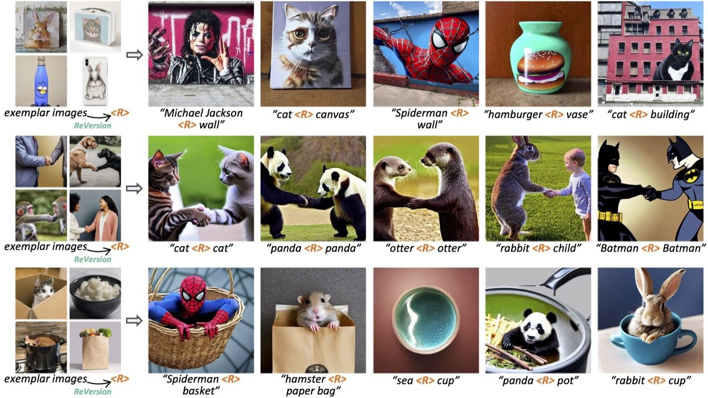

|
Tianxing Wu I am a PhD student at MMLab@NTU, Nanyang Technological University, supervised by Prof. Ziwei Liu. Previously, I obtained my M.S. degree from School of Electrical and Electronic Engineering, Nanyang Technological University, and my B.Eng. degree from College of Automation, Harbin Engineering University. My research interest lies in computer vision, deep learning and generative models. Currently I mainly focus on visual generation. Email / Google Scholar / Twitter / GitHub |
News
|
Publications |
|
|  |
ReVersion: Diffusion-Based Relation Inversion from Images
Ziqi Huang*, Tianxing Wu*, Yuming Jiang, Kelvin C.K. Chan, Ziwei Liu SIGGRAPH Asia, 2024 project page / arXiv / video / code Learn a relation prompt to capture co-existing relation in exemplar images, then apply to new entities for synthesizing new scenes. |
|
FreeInit: Bridging Initialization Gap in Video Diffusion Models
Tianxing Wu, Chenyang Si, Yuming Jiang, Ziqi Huang, Ziwei Liu ECCV, 2024 project page / arXiv / video / code We discover a training-inference gap in the noise initialization of video diffusion models, and propose FreeInit to bridge this gap. It improves temporal consistency and object appearance without training. |
|
|
VideoBooth: Diffusion-based Video Generation with Image Prompts
Yuming Jiang, Tianxing Wu, Shuai Yang, Chenyang Si, Dahua Lin, Yu Qiao, Chen Change Loy, Ziwei Liu CVPR, 2024 project page / arXiv / video / code A feed-forward framework for generating customized high-quality videos with subjects specified in image prompts. |
|
|
VBench: Comprehensive Benchmark Suite for Video Generative Models
Ziqi Huang*, Yinan He*, Jiashuo Yu*, Fan Zhang*, Chenyang Si, Yuming Jiang, Yuanhan Zhang, Tianxing Wu, Qingyang Jin, Nattapol Chanpaisit, Yaohui Wang, Xinyuan Chen, Limin Wang, Dahua Lin, Yu Qiao, Ziwei Liu CVPR, 2024 (Spotlight) project page / arXiv / video / code A comprehensive benchmark suite for video generative models. |
|
|
Detecting and Grounding Multi-Modal Media Manipulation and Beyond
Rui Shao, Tianxing Wu, Jianlong Wu, Liqiang Nie, Ziwei Liu TPAMI, 2024 project page / arXiv / code We propose HAMMER++ to better tackle the DGM4 challenge. |
|
|
Talk-to-Edit: Fine-Grained 2D and 3D Facial Editing via Dialog
Yuming Jiang, Ziqi Huang, Tianxing Wu, Xingang Pan, Chen Change Loy, Ziwei Liu TPAMI, 2023 project page / pdf / paper An interactive 2D + 3D facial editing framework that performs fine-grained attribute manipulation through dialog between the user and the system. |
|
|
Detecting and Grounding Multi-Modal Media Manipulation
Rui Shao, Tianxing Wu, Ziwei Liu CVPR, 2023 project page / arXiv / video / code Different from existing forgery detection tasks, DGM4 performs real/fake classification on image-text pairs, and further attempts to detect fine-grained manipulation types and ground manipulated image bboxes and text tokens. |
|
|
SeqDeepFake: Detecting and Recovering Sequential DeepFake Manipulation
Rui Shao, Tianxing Wu, Ziwei Liu ECCV, 2022 project page / arXiv / code In this work, we focus on detecting DeepFake manipulation sequences rather than binary lables. |
|
Pre-prints |
|

|
LaVie: High-Quality Video Generation with Cascaded Latent Diffusion Models
Yaohui Wang*, Xinyuan Chen*, Xin Ma*, Shangchen Zhou, Ziqi Huang, Yi Wang, Ceyuan Yang, Yinan He, Jiashuo Yu, Peiqing Yang, Yuwei Guo, Tianxing Wu, Chenyang Si, Yuming Jiang, Cunjian Chen, Chen Change Loy, Bo Dai, Dahua Lin, Yu Qiao, Ziwei Liu arXiv, 2023 project page / arXiv / code An integrated video generation framework that operates on cascaded video latent diffusion models, comprising a base T2V model, a temporal interpolation model, and a video super-resolution model. |
|
DeepFake-Adapter: Dual-Level Adapter for DeepFake Detection
Rui Shao, Tianxing Wu, Liqiang Nie, Ziwei Liu arXiv, 2023 arXiv / code A dual-level adapter that adapts a pre-trained ViT for generalizable deepfake detection. |
|
|
Robust Sequential DeepFake Detection
Rui Shao, Tianxing Wu, Ziwei Liu arXiv, 2023 arXiv / code Building stronger correspondence between image-sequence pairs for more robust Seq-DeepFake detection. |
|
Academic Services
|
Teaching
|
|
Source code origin: Jon Barron |